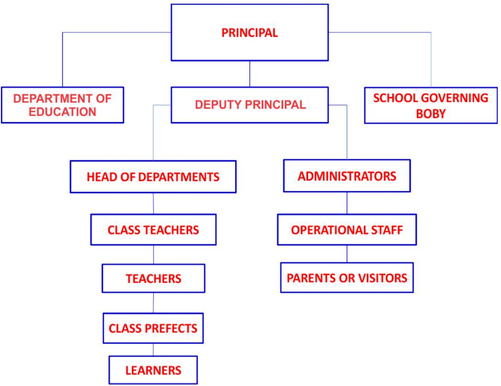

TOPIC 5: EDUCATIONAL ADMINISTRATION
Instructional Leaders
- Principal
- Deputy Principal
- Teachers
- Senior Teacher
- Dean of Students
- Heads of Departments (H.O.Ds)
- Examination Officer
- Director of Studies or Academic officer
This implies that the role of instructional leadership is pivotal in creating conducive learning atmosphere in the school.
Organogram Showing the Structure of Instructional Leaders in a School
Roles of Instructional Leaders
The Role of School Principal & Deputy as Instructional Leader
- To create a shared vision and clear goals for their schools and ensure continuous progress toward achieving the goals
- Support the implementation of high-quality standards based instruction that results in higher levels of achievement for all students
- Provide opportunities for all members of the school community to build their capacity and participate in important school decisions
- Management of the instructional program focus on the coordination and control of the instruction and curriculum
- Allocate resources and manage school operations in order to ensure a safe and productive learning environment and engage parents and community members in the educational process and create an environment where community resources support student learning, achievement and wellbeing.
- Supervising instruction by stimulating staff development, to influence teacher behaviour in the classroom and to foster selection, development, use and evaluation of good instructional approaches and materials.
- School principals as instructional leaders along with teachers become engaged in monitoring learners' progress closely and frequently by means of evaluating tests and examinations.
- Promoting a positive school learning climate viewed as one dimension of instructional leadership and serves the principal to influence the social organization and thereby establish environment that supports the instructional process
- Protecting instructional time: research conducted during the late 1970s and 1980s indicates the substantial effects of time on students learning.
- Providing incentive for teachers: an important part of the principal's role in creating a positive learning climate involves setting up work structure that rewards and recognizes teachers for their efforts.
- Providing incentive for learners: this principal's role can create a school climate in which students value academic achievement by frequently rewarding and recognizing students' academic achievement both within the class and before the school as a whole.
- Promoting professional development: principals need to promote professional development through organizing and leading in-service training activities and ensure that staff development activities are closely linked to school goals.
- Maintaining high visibility: high visibility of principal's in school campus and in classrooms increases interaction between the principal and students as well as with teachers.
Role of Senior Teachers as Instructional Leaders
- Have the content knowledge and pedagogical practice to meet the diverse needs of all students
- Provide a child safe environment in accordance with the child safe standards
- Model exemplary classroom practice and mentor or coach other teachers in the school to engage in critical reflection of their practice and to support staff to expand their capacity
- Provide expert advice about the content, processes and strategies that will shape individual and school professional learning
- Supervise and train one or more pre-service teachers, and
- Assist staff to use student data to inform teaching approaches that enable targets related to improving student learning outcomes to be achieved
- Managing and supervising a team of teachers in the planning, implementation and review of teaching and learning programs according to the school strategic plan's goals and priorities
- Leading the development of curriculum policies and programs
- Managing the supervision of pre service teachers
- Coordinating the development and implementation of curriculum in small schools
- Managing a year level or learning area
- Managing a specialist function, such as sport, careers, student welfare, excursions or camps
- Developing and managing the school transition program as it relates to Pre-School to Year Prep and, or Year 6 to Year 7 transition and facilitating the associated orientation programs, and
- Assisting the principal, assistant principal and leading teachers with the performance of specific functions appropriate to the classification and role
Role of Class Teachers as Instructional Leaders
-
Resource Provider
Teachers help their colleagues by sharing instructional resources. These might include websites, instructional materials, readings, or other resources to use with students. They might also share such professional resources as articles, books, lesson or unit plans, and assessment tools.
-
Instructional Specialist
An instructional specialist helps colleagues implement effective teaching strategies. This help might include ideas for differentiating instruction or planning lessons in partnership with fellow teachers. Instructional specialists might study research-based classroom
-
Curriculum Specialist
Understanding content standards, how various components of the curriculum link together, and how to use the curriculum in planning instruction and assessment is essential to ensuring consistent curriculum implementation throughout a school. Curriculum specialists lead teachers to agree on standards, follow the adopted curriculum, use common pacing charts, and develop shared assessments.
-
Classroom Supporter
Classroom supporters work inside classrooms to help teachers implement new ideas, often by demonstrating a lesson, co-teaching, or observing and giving feedback. Blase and Blase (2006) found that consultation with peers enhanced teachers' self-efficacy (teachers' belief in their own abilities and capacity to successfully solve teaching and learning problems) as they reflected on practice and grew together, and it also encouraged a bias for action (improvement through collaboration) on the part of teachers.
-
Learning Facilitator
Facilitating professional learning opportunities among staff members is another role for teacher leaders. When teachers learn with and from one another, they can focus on what most directly improves student learning. Their professional learning becomes more relevant, focused on teachers' classroom work, and aligned to fill gaps in student learning. Such communities of learning can break the norms of isolation present in many schools.
-
Mentor
Serving as a mentor for novice teachers is a common role for teacher leaders. Mentors serve as role models; acclimate new teachers to a new school; and advise new teachers about instruction, curriculum, procedure, practices, and politics. Being a mentor takes a great deal of time and expertise and makes a significant contribution to the development of a new professional.
-
School Leader
Being a school leader means serving on a committee, such as a school improvement team; acting as a grade-level or department chair; supporting school initiatives; or representing the school on community or district task forces or committees. A school leader shares the vision of the school, aligns his or her professional goals with those of the school and district, and shares responsibility for the success of the school as a whole.
-
Data Coach
Although teachers have access to a great deal of data, they do not often use that data to drive classroom instruction. Teacher leaders can lead conversations that engage their peers in analyzing and using this information to strengthen instruction.
-
Catalyst for Change
Teacher leaders can also be catalysts for change, visionaries who are "never content with the status quo but rather always looking for a better way" (Larner, 2004, p. 32). Teachers who take on the catalyst role feel secure in their own work and have a strong commitment to continual improvement. They pose questions to generate analysis of student learning.
-
Lifelong earner
Among the most important roles teacher leaders assume is that of learner. Learners model continual improvement, demonstrate lifelong learning, and use what they learn to help all students achieve.
- Plan and implement a range of teaching programs or courses of study
- Provide a child safe environment in accordance with the child safe standards
- Teach an area of the curriculum or a general curriculum to a year level
- Monitor, evaluate and report student progress in key learning areas
- Implement strategies to achieve targets related to student learning outcomes
- Maintain records of class attendance and recording student progress
- Implement effective student management consistent with the school's strategic plan, and
- In their first year of teaching work with a mentor to participate in professional development planning, implementation and reflection and developing a professional portfolio.
- Supervising a range of student activities including support and welfare programs, and
- Contributing to a range of co-curricular programs
Role of other School Personnel in a Learning Institution
School Leaders
School leaders are those who are involved in overseeing the operation of the school district and/or the individual school.
Board of Education
The board of education is ultimately responsible for most decision-making in a school. The board of education is made up of elected community members most usually consisting of five members. The eligibility requirement for a board member varies by state. The board of education generally meets once per month. They are responsible for hiring the district superintendent. They also generally take into account the recommendations of the superintendent in the decision-making process.
Superintendent
The superintendent oversees the daily operations of the school district as a whole. They are generally responsible for providing recommendations to the school board in a variety of areas. The superintendent's primary responsibility is handling the financial matters of the school district. They also lobby on behalf of their district with the State government.
Assistant Superintendent
A smaller district may not have any assistant superintendents, but a larger district may have several. The assistant superintendent oversees a specific part or parts of a school district's daily operations. For example, there may be an assistant superintendent for curriculum and another assistant superintendent for transportation. The assistant superintendent is overseen by the district superintendent.
Principal
The principal oversees the daily operations of an individual school building within a district. The principal is primarily in charge of overseeing the students and faculty/staff in that building. They are also responsible for building community relationships within their area. The principal is often responsible for interviewing prospective candidates for job openings within their building as well as making recommendations to the superintendent for hiring a new teacher.
Assistant Principal
A smaller district may not have any assistant principals, but a large district may have several. The assistant principal may oversee a specific part or parts of a school's daily operations. For example, there may be an assistant principal who oversees all student discipline either for the entire school or for a particular grade depending on the size of the school. The assistant principal is overseen by the building principal.
Athletic Director
The athletic director oversees all of the athletic programs in the district. The athletic director is often the person in charge of all the athletic scheduling. They also often have their hand in the hiring process of new coaches and/or the removal of a coach from their coaching duties. The athletic director also oversees the spending of the athletic department.
School Faculty
School faculty are employees who work more directly with students than school leaders, including teaching them, counseling them, and assisting them with any special needs.
Teacher
Teachers are responsible for providing the students they serve with direct instruction in the area of content in which they specialize. The teacher is expected to use the district-approved curriculum to meet state objectives within that content area. The teacher is responsible for building relationships with parents of children which they serve.
Counselor
A counselor's job is often multifaceted. A counselor provides counseling services for students who may struggle academically, have a rough home life, may have gone through a difficult situation, etc. A counselor also provides academic counseling setting student schedules, getting students scholarships, preparing them for life after high school, etc. In some cases, a counselor may also serve as the testing coordinator for their school.
Special Education
A special education teacher is responsible for providing the students they serve with direct instruction in the area of content with which the student has an identified learning disability. The special education teacher is responsible for writing, reviewing, and implementing all Individual Education Plans (IEP) for students served. They also are responsible for scheduling meetings for IEPs.
Speech Therapist
A speech therapist is responsible for identifying students who need speech related services. They are also responsible for providing the specific services needed to those students identified. Finally, they are responsible for writing, reviewing, and implementing all speech related IEPs.
Occupational Therapist
An occupational therapist is responsible for identifying students who need occupational therapy related services. They are also responsible for providing the specific services needed to those students identified.
Physical Therapist
A physical therapist is responsible for identifying students who need physical therapy related services. They are also responsible for providing the specific services needed to those students identified.
Alternative Education
An alternative education teacher is responsible for providing the students they serve with direct instruction. The students they serve often cannot function in a regular classroom often because of discipline related issues, so the alternative education teacher has to be extremely structured and a strong disciplinarian.
Library/Media Specialist
A library media specialist oversees the operation of the library including the organization, ordering of books, checking out of books, the return of books, and re-shelving of books. The library media specialist also works directly with the classroom teachers to provide assistance in anything associated with the library. They also are responsible for teaching students library related skills and creating programs that develop lifelong readers.
Reading Specialist
A reading specialist works with students who have been identified as struggling readers in a one-on-one or small group setting. A reading specialist assists the teacher in identifying students who are struggling readers as well as finding the specific area of reading which they struggle. A reading specialist's goal is to get each student they work with on grade level for reading.
Intervention Specialist
An intervention specialist is much like a reading specialist. However, they are not just limited to reading and may assist students who struggle in many areas including reading, math, science, social studies, and other subjects. They often fall under the direct supervision of the classroom teacher.
Coach
A coach oversees the day to day operations of a specific sports program. Their duties can include organizing practice, scheduling, ordering equipment, and coaching games. They are also in charge of specific game planning including scouting, game strategy, substitution patterns, player discipline, etc.
Assistant Coach
An assistant coach helps the head coach in whatever capacity the head coach directs them. They often suggest game strategy, assist in organizing practice, and helps with scouting as needed.
School Support Staff
Support staff employees are those who help the school function on a day-to-day basis, including operating the main office, performing vital behind-the-scenes tasks, cleaning and maintaining the school, assisting teachers with students, and even transporting students to and from school.
Administrative Assistant
An administrative assistant is one of the most important positions in the entire school. A school administrative assistant often knows the day-to-day operations of a school as well as anyone. They are also the person who communicates most often with parents. Their job includes answering phones, mailing letters, organizing files, and a host of other duties. A good administrative assistant screens for the school administrator and makes their job easier.
Encumbrance Clerk
The encumbrance clerk has one of the most difficult jobs in the entire school. The encumbrance clerk is not only in charge of school payroll and billing, but a host of other financial responsibilities. The encumbrance clerk has to be able to account for every cent a school has spent and received. An encumbrance clerk must be organized and must stay current with all laws dealing with school finance.
School Nutritionist
A school nutritionist is responsible for creating a menu that meets state nutrition standards for all meals served at school. They are also responsible for ordering the food that will be served. They also collect and keep up with all monies taken in and spent by the nutrition program. A school nutritionist is also responsible for keeping track of which students are eating and for which students qualify for free/reduced lunches.
Teacher's Aide
A teacher's aide assists a classroom teacher in a variety of areas that can include making copies, grading papers, working with small groups of students, contacting parents, and a variety of other tasks.
Paraprofessional
A paraprofessional is a trained individual who assists a special education teacher with their day-to-day operations. A paraprofessional may be assigned to one particular student or may help with a class as a whole. A paraprofessional works in support of the teacher and does not provide direct instruction.
Nurse
A school nurse provides general first aid for students in the school. The nurse may also administer medication to students who need it or are required medication. A school nurse keeps pertinent records on when they see students, what they saw, and how they treated it. A school nurse may also teach students about health and health-related issues.
Cook
A cook is responsible for the preparation and serving of food to the entire school. A cook is also responsible for the process of cleaning up the kitchen and the cafeteria.
Custodian
A custodian is responsible for the day-to-day cleaning of the school building as a whole. Their duties include vacuuming, sweeping, mopping, cleaning bathrooms, emptying trash, etc. They may also assist in other areas such as mowing, moving heavy items, etc.
Maintenance
Maintenance is responsible for keeping all the physical operations of a school running. If something is broke, then maintenance is responsible for repairing it. These may including electrical and lighting, air and heating, and mechanical issues.
Computer Technician
A computer technician is responsible for assisting school personnel with any computer issue or question that may arise. Those may include issues with email, the internet, viruses, etc. A computer technician should provide service and maintenance to all school computers to keep them running so that they may be used as needed. They are also responsible for server maintenance and the installation of filter programs and features.
Bus Driver
A bus driver provides safe transportation for students to and from school.
Administrative Procedures in Learning Institutions
1. Staff Meeting
School staff primary purpose is to provide education. Teachers should spend time with their students and not in meetings, therefore it is important to keep your meetings short and effective. School staff meetings have the usual challenges of participants who are not (optimally) prepared, writing the minutes takes a lot of time and there is no good task follow-up. In addition, managing a school or faculty requires juggling meetings and tasks related to very different departments and projects.
Meetings can help by automating all the administrative work around meetings (agendas, minutes, etc) and managing all meeting tasks to make sure things get done.
2. Duty Roster
A duty roster was a schedule which assigned tasks, shifts (such as the night shift), and away missions to crew members. ... These teachers generally enjoy their yard duty rosters because they take the time to develop their relationships with their students in an environment that is outside of the classroom.
Sample Duty roster:
| DUTIES | MONDAY | TUESDAY | WEDNESDAY | THURSDAY | FRIDAY |
|---|---|---|---|---|---|
| DROP ZONE | DUTY TEACHERS AND CLASS TEACHERS | ||||
| BREAK(PRMARY): CANTEEN/POOL | NORAINU/DG.KASM | MR. ADRIAN/EMBRAN | RITA BINTING/ZURAIN | JESLINAI /ELYANI | FATMAH / JENNIFER |
| CORRIDOR CLASSROO | ROSMIRI | HIDAYAH | STEPHENIE | ABD.RAHM | JANE SARAN |
| SEC.(BREAK) | EN. SANI | MR. PETER TEO | RIZUAN | JURY TAUNSON | MR. KUMAPAGURU |
| LUNCH(PRMARY): CANTEEN/POOL | NORANN UROSMIRI | PETERTEO/EMBRAN | NANDA/RITA | JURY TAUNSON/SANIN | JANE SARANURAFIAH |
| CORRIDOR CLASSROO | DO. KASMAH | MR.ADRIAN | BADAR / EN. GENEMAS | ANGELINA/JESLINA | MR. KUMARAGURU |
| LUNCH(SECONDARY) | GAAN KIAN HUI | PN. LYDIAFINAN | NURFARHANLA | AMANDA | JENNIFER JUIP |
| PICK UP ZONE | EV | RYO | E | O | JTY |
3. Time Tabling
A school timetable is a calendar that coordinates students and teachers within the classrooms and time periods of the school day. Other factors include the class subjects and the type of classrooms available (for example, science laboratories).
Sample Timetable:
| TIME/DAY | 8:00AM TO 8:20AM | 8:20AM TO 8:45AM | 8:45AM TO 9:10AM | 9:10AM TO 9:40AM | 9:40am to 10:10am | 10:10am TO 10:40AM | 10:40AM TO 11:00AM | 11:00AM TO 11:30AM | 11:30AM TO 12:00 NOON | 12:00 NOON TO 2:00PM | 2:00PM TO 3:30PM | 3:30PM |
|---|---|---|---|---|---|---|---|---|---|---|---|---|
| MON | FREE | HEALTH CHECK | LANGUAGE ACTIVITIES | BREAK | MATHEMATICS ACTIVITIES | PSYCHOMOTOR ACTIVITIES | BREAK | ENVIRONMENTAL ACTIVITIES | CREATIVE ACTIVITIES | LUNCH | REST AND quiet activities | HOME |
| TUE | LANGUAGE ACTIVITIES | MATHEMATICS ACTIVITIES | PSYCHOMOTOR ACTIVITIES | ENVIRONMENTAL ACTIVITIES | ART AND CRAFT | |||||||
| WED | LANGUAGE ACTIVITIES | MATHEMATICS ACTIVITIES | PSYCHOMOTOR ACTIVITIES | ENVIRONMENTAL ACTIVITIES | RELIGIOUS ACTIVITIES | |||||||
| THUR | LANGUAGE ACTIVITIES | MATHEMATICS ACTIVITIES | PSYCHOMOTOR ACTIVITIES | ENVIRONMENTAL ACTIVITIES | MUSIC AND MOVEMENT | |||||||
| FRI | IP.IP.I. | LANGUAGE ACTIVITIES | PSYCHOMOTOR ACTIVITIES | MATHEMATICS ACTIVITIES | ENVIRONMENTAL ACTIVITIES |
Class teacher: _______________
4. School and Office Routines
The school routine refers to the programme of the activities that have been planned to take place every day in the school. Different schools have different routines for example, day schools have different routines from boarding schools.
BENEFITS OF CLASSROOM ROUTINES AND PROCEDURES
Effective classroom procedures and routines offer many benefits to students. Students who know how they should act in the classroom can be more successful because they can learn and achieve more. Students will spend more time learning instead of getting ready for class or asking questions about what they should do because you've streamlined the process for daily tasks. The benefits of classroom routines and procedures include:
- Creates consistency: Students will learn what to expect when you're consistent. Routine consistency fosters a positive learning environment because the same rules apply to everyone so no one can be discriminated against or favored.
- Enhances behavior management: Students will learn your rules and what you do to enforce them. Enforcing your rules will increase your students' respect for you and decrease behavioral problems.
- Reduces classroom distractions: An established routine will lessen student movement in the classroom or direct it where you want it to go. When the students know what they're supposed to be doing, it will also reduce distractions. If someone comes to class late, they can easily catch up without disrupting the class because they know the class structure.
- Boosts focus and engagement: Students will become familiar with the classroom flow and what comes next, making it easier for them to be focused and engaged.
- Creates an effective classroom management plan: The only way for your classroom management plan to work is if you are consistent and enforce the rules. If you don't, students will think they can get away with things, which leads to behavioral problems.
- Makes lesson planning easier: Once you have a routine, it serves as an outline for lesson planning. It makes lesson planning easier because all you have to do is fill in the blanks based on the times you set for various subjects or activities.
Sample School Routine:
| ACTIVITY | TIME |
|---|---|
| WAKING UP | 4.00 A.M. |
| PREP | 4.30 A.M. - 5.30 A.M. |
| PRAISE & WORSHIP | 5.30 A.M. - 6.00 A.M. |
| BREAKFAST | 6.00 A.M. - 6.30 A.M. |
| MORNING PREPS/REMEDIAL TEACHING | 6.30 A.M. - 7.30 A.M. |
| ASSEMBLY /MEETINGS | 7.30 A.M. - 8.OO A.M. |
| LESSONS | 8.00 A.M. - 10.40 A.M. |
| TEA BREAK | 10.40 A.M. - 11.10 A.M |
| LESSONS | 11.1O A.M. - 1.10 P.M. |
| LUNCH BREAK | 1.10 P.M. - 2.00 P.M. |
| LESSONS | 2.00 P.M. - 4.OO P.M. |
| CO-CURRICULAR ACTIVITIES | 4.OO P.M. - 6.OO P.M. |
| PERSONAL CLEANING /PREPAREATION | 6.00 P.M. - 6.30 P.M. |
| SUPPER | 6.30 P.M. - 7.00 P.M. |
| NIGHT PREPS (JUNIORS) | 7.00 P.M. - 9.00 P.M. |
| GROUP DISCUSSIONS (F.3&4) | 9.00 P.M. - 10.00 P.M. |
Office Routines
Office routine is a planned sequence of operations for handling recurring school official activities and procedures uniformly. Office routine occupies a significant part of office system and it consists of a number of steps involved in doing a piece of work.
Employers may not feel responsible for a productive routine within the office but it is important to remember that the first few hours of the day can affect productivity for the rest of the work day. A routine at the office involving all your employees is the easiest way to keep them motivated and productive.
Employees may be resistant to having too much structure at work so keep the routine simple and straightforward. Try to encourage your employees to do the following:
- Be punctual in the morning. If they arrive a little early, they have the opportunity to review the day ahead while it will also make them feel accomplished.
- Have a cup of tea or coffee. Before they get into their work, encourage them to take five minutes to take a breather and settle in. They should use this time to let go of their stressful commute and anything else not work-related.
- Avoid being the morning grump. Everyone has their off days but they should not bring their bad attitudes to work. A single moody employee can affect the entire office's morale.
- Outline their priorities. Hold a quick meeting for everyone to outline their goals for the day and decide what their priority is, as the first few hours are the best for dealing with the most important issues. Encourage them to keep to-do lists and update them daily by ticking off their accomplishments and adding new actions. This time will also allow you as a leader to connect with your team members and set the day's tone.
- Make important calls or answer urgent emails first. Emails and calls are more likely to be answered within the first few hours of the day, so do not allow projects to remain incomplete because answers were not found.
- Take a break! Try to get your employees to have at least two breaks during the day: midmorning and lunch. These breaks will revitalize them for the rest of the day.
- Clean up their space. Designate someone to clean up the workspace at the end of the day, tidying up, moving away stray coffee cups, clearing papers... Rotate this role between all employees: not only will the employees become aware of the mess they make but the office will be spick-and-span for the next working day.
Procedures related to permission and discipline in learning institutions
Indiscipline/ Misconduct
Misconduct is behaviour which interferes with the proper functioning of the school and its activities or those who work and study at the school, or which has the potential to damage the reputation of the school or the student body.
The following list is indicative of behaviour which would constitute misconduct and is provided for guidance. It is neither exclusive nor exhaustive, and there may be other offences which also constitute misconduct.
- Disruption of, or improper interference with, the academic, administrative, sporting, social, or other activities of the school.
- Obstruction of, or improper interference with, the activities, functions or duties of any student, member of staff, or authorized visitor to the school, including failure to disclose name, student number or other relevant details to a member of school staff in circumstances when it is reasonable to require such information to be given;
- Violent, indecent, disorderly, threatening, aggressive or offensive behaviour or language, however expressed, towards any other student, member of staff, or visitor to the school.
- Bullying or harassment in any form of any member of the school community (including students, members of staff, contractors, or other authorized visitors to the school.
- Inappropriate use of social media, including making offensive comments to or about members of the school's community and/or publishing audio or visual recordings of members of the school's community without their consent and with the intention to cause embarrassment, distress or harassment;
- Misuse or unauthorized use of school premises or items of property, including computer misuse or breaches of the school's acceptable use of IT policy;
- Damage to, or defacement of, University property or the property of other students, caused intentionally or recklessly;
- Theft or unauthorized removal of any property owned or leased by the school or property belonging to a student, member of staff, or authorized visitor to the school;
- Behaviour that uses, or attempts to use, fraud, deceit, deception or dishonesty in relation to the school or its staff or in connection with holding any office in the school or in relation to being a student of the school, including the falsification of University records including letters, certificates and transcripts;
- Actions which might cause injury or put at risk the health or safety of people on school premises or whilst on school activities;
- Behaviour that jeopardizes or damages the good order or reputation of the school, staff or the student body;
- Drug use on school premises and/or attending classes or entering any other learning environment whilst under the influence of alcohol or drugs;
- Possession of offensive weapons, possession of implements that are intended for use as weapons and possession of illegal substances on school premises, on school activities, or at an event under the control of the Students' Union;
- Conduct which constitutes a criminal offence when that conduct took place on school premises, or in the course of University activities, or against any member of the University community;
- Conviction of a criminal offence, irrespective of where committed, where the consequences of the offence could impact on school staff, students or property;
- Interfering with or intimidating witnesses in disciplinary proceedings;
- Failure to comply with a penalty and associated conditions previously imposed under this procedure;
- Malicious and/or vexatious allegations and complaints brought against a student, member of staff, or the University under the Student Complaints Procedure;
- Behaviour that breaches any other regulation, policy or rule of the school.
General Conduct Expected of Students.
Students are required to:
- Recognize that they have responsibilities to their Parents, the College, teachers, their fellow students and themselves;
- Refrain from behaviour which brings the good name of the school into disrepute;
- Comply with the school rules and instructions given by the teachers and Head of the school; -
- Behave responsibly, not endanger the safety and welfare of others and be accountable for their actions;
- Adapt a responsible and self-disciplined approach to all school related activities;
- Use technological equipment, including the internet on and off campus and cell phones off campus, in a responsible and considerate manner;
- Respect and care for the property of the school and others;
- Maintain sound relations with others at the school be courteous and respect the dignity and self-worth of others;
- Be punctual and observe the timekeeping practices of the school Demonstrate a positive attitude towards the opportunity to learn and be diligent in their efforts to learn;
- Behave honestly and conduct themselves with integrity;
- Accept legitimate punishment and disciplinary action taken against them as being both necessary and corrective; and
- Take care of their environment.
ADMINISTRATIVE RECORDS
Different types of administrative records in a learning institution
Types of Administrative Records in a School
Different Types of Administrative Records a School Must Maintain:
-
Log Book
The Log Book is specifically designed for the purpose of containing remarks of the school inspector or other important officers of the education department, who pay an official visit to the school. But it should not be confined to the remarks of the inspecting officers only. It should contain a complete record of the important events that occur during the session. It should also contain the history of the school of a particular year.
Information like the introduction of new text books or apparatus, visits of the inspecting officers, changes in the school routine, absence or illness of any of the official staff etc., should be written in the Log Book. The headmaster is the only authority to make entries in this book.
-
Admission Register/General Register
It is a record of all the pupils who arc admitted to a school. According to departmental rules, the admission register is to be preserved permanently in the school. Therefore, it is essential that it should be got specially bound and kept in safe custody. It is to be free from mistakes because this register is at times required by superior authorities in a court of law as an evidence for the date of birth of the pupils. The admission register should contain the following items.
- The enrolment/registration number of the student.
- Name of the student in full.
- Dais of admission/re-admission and withdrawal/leaving.
- Date of birth of the student. Great care should be taken to ensure that there are no mistakes in entering the date of birth of the student as it is often required as evidence of a child's exact age.
- Name and address of the parents/guardian.
- Name and address of the local guardian if the child is living in a hostel.
- The class to which admitted
- The date of leaving, the class last attended and the reason for leaving.
- Name of the school last attended.
-
Visitors' Book:
This is kept for registering a record of all the visitors entering the school. It can also contain a special section for recording the remarks of such visitors, if any. This is necessary because visitors' remarks cannot be entered in the log book.
-
Pupil's Attendance Register:
This is another important register which is maintained in each class and section, showing the names of the pupils on the roll of the class or section, during a month. The attendance is marked in the beginning of (he school hour. Entries should be made in ink. Blanks should not be left. Students who remain absent from the school without leave for fifteen consecutive attendance is struck off from the rolls. Holidays are marked in red ink. Monthly fees and fines are collected from the pupils in this register.
-
Teacher's Attendance Register:
To record the daily attendance of the teachers, schools maintain the teacher's attendance register. This shows the time of arrival and departure of the teachers on each day. The teachers are to sign regularly in the forenoon and afternoon everyday. Time of arrival of the late comers should be indicated. Leave taken by (he teachers during the month holidays etc., are to be written on it. It should be kept outside the room of the headmaster. When the first period starts, it should go to the headmaster for verification.
-
Cash Book:
Cash Book is a record of all money transactions occurring from day-to-day in the school. Money received by the school from different sources like fees, fines, donations, stipends, scholarships, grant-in-aid are entered on the credit side. On the debit side the payments like the salaries of the teachers, stipends, scholarships, contingent expenditure incurred, deposits made in the Treasury, bank and post office are shown. Balance is shown in red ink. It should be regularly written and the day's business should be closed with the signature of -the headmaster. It should be an up-to-date record.
-
Cumulative Record Cards
It is a document in which the relevant information about a particular students at one educational institution is recorded cumulatively. This gives a complete and growing picture of the individual student, which helps him during his long stay at the school and at the time of leaving it, in the solution of his manifold problems of educational, vocational; personal and social. It follows the pupil from class to class and from school.
It provides an opportunity to have a comprehensive picture of the all-round development of the personality of the child. It is a very important record which should be maintain in every school. Therefore, The Secondary Education Commission opines "these should be a common feature all over the country."
-
Stock Register of Equipments
This register keeps information of all the movable property of the school. While purchasing equipment or furniture, it must be duly entered in this property register. The head of the institution should check this register physically at least once in a year. Verification report should be recorded in the stock register. It can show which articles are missing and which need immediate repairs. The register should contain the following information :
- Name of the article.
- Quantity of the articles.
- Date of purchase.
- Name of the firm which supplied the articles.
- The authority ordering purchase,
- Signature of the authority.
-
Reports to the Parents
To get cooperation from the parents reports containing various information about the child should be sent to the parents periodically. It should contain information like the academic progress of the child, his health condition, participation in curricular and co-curricular activities and other important information.
As a result, the parents can know the physical, intellectual, social, moral and emotional growth of their children. Parents are also requested to guide their children according to the information given in [he report.
-
Service Book
The service book contains the service history of the employees. Information like the employee's dale of appointment, his date of birth, educational qualifications, identification marks, permanent home address, transfer, leave accounts, dale of increments, reversion if any of reinstatement etc., are carefully written in this book. The original service book is kept in the custody of the headmaster in the secondary school.
The authorities should duly verify the service book and make necessary entries. The first page of the service book contains the following information:
- Name
- Residence.
- Date of birth by Christian era as nearly as can be ascertained.
- Educational qualification.
- Exact height by measurement.
- Personal mark for identification.
- Father's name and residence.
- Left hand thumb and finger impression.
- Signature of the teacher.
- Date of entry into service.
- Signature of the Headmaster.
From the next page the name of the post, temporary or permanent, monthly pay, date of increment, details of leave account etc., are written neatly. The entries of the first page should be renewed or re-attested at least every five years except in the case of finger prints.
School Routine
The school routine refers to the programme of the activities that have been planned to take place every day in the school. The key to a stress-free school run begins with an organised routine. Much distress can be avoided through helping your child establish a regular routine.Different schools have different routines, day schools have different routines from boarding schools. for example:
- Earlymorning;private studies
- General cleaning; which trains pupils on the importance of living in clean surroundings or environment. It also teaches them to appreciate work.
- Assembly comes immediately after general cleaning, the activities include:
- Prayers
- Raising of flags (Mondays & Fridays)
- Singing the National Anthem and reciting the oyalty pledge
- Announcement by teachers
- Entertainment by pupils
Note the following:
- Lower class time table ends at 12:40pm
- Upper class time table ends at 4:10pm
- Lower class lesson takes 30 minutes while upper class lesson takes 35 minutes
- Some schools have feeding programme
- Where pupils are too many and classrooms are too few some pupils in lower begin their lessons in the afternoon.
TEACHING AS A PROFESSION
In its broadest sense, teaching is a process that facilitates learning. Teaching is the specialized application of knowledge, skills and attributes designed to provide unique service to meet the educational needs of the individual and of society. The choice of learning activities whereby the goals of education are realized in the school is the responsibility of the teaching profession.
In addition to providing students with learning opportunities to meet curriculum outcomes, teaching emphasizes the development of values and guides students in their social relationships. Teachers employ practices that develop positive self-concept in students.
The first thing that you must know about teaching as a profession is that teaching is about inspiring and motivating students to realize and exceed their potential. The greatest teachers of all time have devoted their lives to inspiring and empowering their students to achieve great things and be good human beings.
Basic Characteristics of Teaching Profession
Following are the basic characteristics of the teaching profession:
- Teaching is an interaction between teacher and students.
- Providing guidance and training to the students.
- Increases the knowledge, skills, and creativity of students.
- Helps in the self-development of the students.
- Teachers are a source of motivation and inspiration to the students.
- Teachers build confidence and increase the self-esteem of the students.
- Teachers cultivate obedience and discipline in the students.
- Helping the students to achieve their goals.
- Develop communication skills in the students.
- Teachers help in building future leaders with their guidance.
- The continued professionalization of teaching is a long-standing goal of the all teachers. Teaching Associations continue to work to advance teaching as a profession. Professionalism is a complex and elusive concept; it is dynamic and fluid.
- It serves a great social purpose. Teachers carry responsibilities weighted with social purpose. Through a rigid and self-imposed adherence to the Code of Professional Conduct, which sets out their duties and responsibilities, teachers pass on their accumulated culture and assist each student under their care in achieving self-realization.
- There is cooperation achieved through a professional organization. Cooperation plays an important role in the development of the teaching profession because it represents a banding together to achieve commonly desired purposes. The teaching profession has won its well-deserved place in the social order through continuous cooperation in research, professional preparation and strict adherence to the Code of Professional Conduct, which obligates every teacher to treat each student within a sacred trust. Teachers have control or influence over their own governance, socialization into teaching and research connected with their profession.
- There is a formal period of preparation and a requirement for continuous growth and development. Teachers are required to complete a defined teacher preparation program followed by a period of induction or internship prior to being granted permanent certification. This period includes support for the formative growth of teachers and judgments about their competence. Teachers are devoted to continuous development of their ability to deliver their service.
- There is a degree of autonomy accorded the professional. Teachers have opportunities to make decisions about important aspects of their work. Teachers apply reasoned judgment and professional decision making daily in diagnosing educational needs, prescribing and implementing instructional programs, and evaluating the progress of students. Teacher judgment unleashes learning and creates the basis for experience.
- The profession has control or influence over education standards, admissions, licensing, professional development, ethical and performance standards, and professional discipline. As professionals, teachers are governed in their professional relationships with other members, school boards, students and the general public by rules of conduct set out in the Association's Code of Professional Conduct. The code stipulates minimum standards of professional conduct for teachers, but it is not an exhaustive list of such standards.
Qualities of a Good Teacher
-
Good Teachers Are Strong Communicators.
When it comes to effective teaching, strong communication skills are a must, By communicating with students at the beginning of the year about how math applies to their favorite hobbies, sports and future careers, the teacher and his students are able to approach the subject in a more enjoyable way that better supported their learning.
-
Good Teachers Listen Well.
Great communication doesn't stop when the teacher is done talking. Listening well is one of the most important skills needed to be a teacher.
Teachers that are skilled in listening and observing often pick up on what isn't being said, such as any anxieties a student may have, and can then help the student build their skills and confidence levels.
-
Good Teachers Focus on Collaboration.
Working in education means you're never truly working alone. From paraprofessionals and teaching assistants to other classroom teachers and school leaders, working as a teacher often means working effectively in a group. It's also important to keep an open mind and learn from other educators.
The key to success in this kind of environment, is the ability to collaborate. You really need to be able to fill various roles in order to collaborate effectively. If you already have someone on your team who is going to be the one to critique all of the suggestions made, then you don't need to join in on that. Instead, maybe you need to be the person who is going to come up with creative ideas. You need to have that flexibility.
-
Good Teachers Are Adaptable.
Effective teachers need to be able to work in a constantly evolving environment and adjust their teaching methods based on the age of their students, the resources available and changing curriculum, practices and requirements. "Change is a constant," she said. "Learning how to adapt and adjust, that's been one of the skills that's been most helpful in my career. It's about keeping my finger on the pulse of who my students are over time and all the trends, standards and new research, and being able to continually improve."
Adaptability is also one of the key skills needed to be a teacher who may be educating students of varying grade levels or different learning styles. "You have to be able to adapt based upon your audience,"
-
Good Teachers Are Engaging.
Being able to engage students with humor, creative lessons and a strong classroom presence is an important part of what makes someone a good teacher. If you were to envision that teacher that you would want in your life, even now, you're going to want someone who is very engaging in front of the classroom.
A good teacher will perform for their students to keep them going... It's not about sitting back and just lecturing, it's about engaging in the work. What an engaging teacher looks like will vary depending on grade level and subject matter.
In kindergarten, an engaging teacher might be one who gets down on the floor to do activities with their students on their level. In high school, an engaging teacher may be one who thinks outside the box, adds humor to their lessons and finds creative ways to bring learning into the real world.
-
Good Teachers Show Empathy.
Another key to engaging students and improving their learning is to treat each student as an individual, by being empathetic and understanding to what may be going on in their lives. "We need to take a moment to think back and think about what could be going on in this student's life," he said. "It's so important to be observant, attentive, and empathetic and always have a positive attitude."
Something that may be easy for one student may not be so easy for someone else. Everyone learns differently, whether it be faster or slower than normal, learns better by writing, reading or hands-on. Teachers need to always keep this in mind and always pay close attention to ensure each student is on the track they need to be.
-
Good Teachers Have Patience.
No matter what grade level you're teaching, your patience will be tested while working as an educator. Whether you're managing classroom behavior, working with colleagues with different views, or communicating student issues or progress with parents, patience is one of the most important skills to practice as a teacher.
More often than not you actually have to have more patience with the parents than you do with the students. Parents are coming in with their perceptions of what happened to them when they were students or previous experiences that may have been detrimental to their child... You have to be patient and understanding of them
-
Good Teachers Value Real-World Learning.
Teachers who bring their students' learning into the real world are often some of the most engaging. But it's important for teachers to bring their own learning into the real world, too.
One of the best preparations for effective teaching is to ensure that education students get plenty of classroom experience. They spend time at a local school once a week to collaborate with teacher partners and apply their learning to the classroom. A year-long student teaching experience is also a powerful way to ensure soon-to-be teachers have the time to hone their teaching skills. "Our students have that benefit of seeing the practical application (of) what they're learning in the moment they're learning it," she said.
-
Good Teachers Share Best Practices.
A willingness to share knowledge and experiences with others is one of the most important qualities of a good teacher.
Education is a hands-on field and often requires experimentation within the classroom to discover which methods of communicating with students work best. Part of being an effective teacher is sharing your findings and best practices with others in the field.
-
Good Teachers Are Lifelong Learners.
One of the key skills needed to be a good teacher is a dedication to continued education and a love of learning. Whether you're learning more about your subject area, learning new methods of communication or even exploring how to bring more technology into your classroom, continuing to expand your own knowledge is key to expanding that of your students. "No matter your education level, you can learn something from everyone you encounter, including fellow educators as well as students," she said. "Being willing to continually add tools to your toolbox - even unconventional ones at times - will keep things new and exciting, as well as giving you excellent skills."
Reasons for Choosing Teaching Career: Benefits/Importance Teaching as a Profession
-
Inspire and Influence
As mentioned, teachers have the added responsibility of shaping future generations. More often than not students look up to teachers and get inspired by the things that they say and do. Teachers have an opportunity to make a difference. As a teacher, you will have the unique opportunity to steer a mass in the right direction. This need not be huge things. You can teach them to be responsible and sensible citizens. For instance, you can throw light on things that matter such as climate change, marine life, and likewise.
-
Improvement and Learning
Teaching and learning go hand in hand. Since you will be around young, curious, minds all day, you will be able to push yourself and get better every day. With the numerous changes in the education sector and in the subjects that you teach, you will be urged to keep yourself updated and that is a great thing. When you are in an environment that asks a lot of questions and is inquisitive, you grow and develop each day. You get to polish your skills and techniques. For instance, teachers across the globe are familiar with online teaching now. It is the sudden development that urges teachers to upskill themselves. There are a lot of teaching blogs that help teachers to upskill and polish themselves.
-
Work Satisfaction
The joy of making a difference and making a change in the right direction is like no other. Teaching provides job satisfaction that is like no other. Every child is different and like we always say, teachers have to use different teaching strategies and techniques to cater to each kid, and when you convey a difficult concept and the students understand it, you get a rush of joy like no other.
-
Respect
Teaching is a respectful job and people look up to teachers for the work that they do and the influence they have. Teaching is a noble profession. Teachers look at all students alike regardless of their academic performance and grades. They guide and direct students and as mentioned previously, they inspire and shape future generations.
-
Potential for Growth
The stability and job security of a teaching career are high. There is always potential for growth. It is a clear career path with a lot of opportunities. The potential that teachers have is commendable and the possibilities of teaching are vast. With online teaching apps and virtual classrooms on the rise, you can teach from the comfort of your home and without any geographical restrictions.
-
Improves Communication Skills
Teaching is a systematic technique to communicate with more and more people. Thus, being in the teaching profession will improve communication skills. As a result, one can interact more confidently with others.
-
Increase knowledge and skills
Teachers are only one who passes on their knowledge and skills to the young generation. Through this profession, teachers motivate and inspire students to focus and develop their natural abilities.
-
A lifelong learner itself
As learning has no boundaries, one can never stop learning. In the teaching profession also, the teacher can learn at any stage and age too. Even R.N. Tagore has said that "Lamp can never light another lamp unless if continues to burn its own flame same as a teacher can never teach unless he/ she is a learner".
-
Fun and learning together
Among all careers and professions, I found teaching much better. The Importance of the Teaching Profession is that one can experience fun and learn together. Besides instructing students, teachers can involve in other curriculum activities.
-
Experience To Handle Different Children
School or college is a place where different students with different mindsets reach. The teacher must have the ability to handle all children normal, intelligent, or physically disabled.
-
Excellent Organization Skills
The teaching profession makes one multi-tasker; in spite of teaching academics to students, teachers, and Organizational skills. Being organized means one can manage time and resources efficiently and effectively for better productivity.
-
Ethical And Disciplined
One characteristic of the teaching profession involves ethics and discipline. Teachers teach ethical values which make students more disciplined. Ethical behavior encourages students to know what is bad or good for them.
-
Setting up Role Model For Others
Being a teacher isn't much complex but being a favorite of all is what matters. Teachers should inspire students to found their hidden talents and achieve their aim. An inspired teacher can make students motivated by setting up Role models.
-
Build Future Leaders
Teachers are the source of influencing tomorrow's leaders. Teachers create classroom space and enable students to be educated and future responsible leaders.
TSC QUALITY TEACHING STANDARDS
- Demonstrate professionalism when engaging and communicating with learners, parents, colleagues and the community
- Models high standards of teaching as prescribed by legal and professional documents
- Contributes to collaborative, inclusive, and friendly school through participation in activities and partnerships with communities
- Creates inclusive classroom environment that supports the social, physical, intellectual, mental, cultural and emotional development of learners
- Takes part in lifelong learning and continually engages in self-reflection, professional inquiry and professional learning in subject - area content
- Stays current in educational theories and innovations in classroom management and their application
- Demonstrate understanding of the provision of education in the Constitution of Kenya
- Demonstrates of the establishment of TSC, legal and professional documents that TSC operations are anchored on. (E.g. the TSC Act, 2021, Code of Regulations for Teachers(CORT), 2015 and Code of Code of Conduct and Ethics (COCE), 2015
- Observes confidentiality associated with their work, including the recording, storing, access, release and handling of confidential information (as specified in (vii) above.
- Has understanding of the roles and structures of basic education institutions such as County Governments, County Education Boards, Boards of Management, Kenya National Examination Council, Kenya Institute of Curriculum Development and other legal entities
- Has understanding of the Rights of learners as provided for in the constitution of Kenya, 2010. Various charters, Basic Education Act, 2013, and other legal documents,
- Demonstrate understanding in Trends and Reforms in Education since independence
Competency Indicators for this Standard include:
The teacher:
- Demonstrates understanding of the broad 21st century learners' outcomes and support systems
- Demonstrates understanding of a competency- based education and how it works
- Demonstrates knowledge of Basic Curriculum Reforms (BECR) i.e. the seven core curriculum competencies
- Demonstrates ability to plan teaching with the end in mind using a backward Instructional Design Model
- Demonstrates understanding of major concepts and processes of inquiry, central to the content area he/ she teaches
- Demonstrates ability to organize the content into an effective learning and teaching progression
- Designs and implements instruction that integrates the seven BEC cross curricular competencies and higher order skills that ensure learning experiences reflect accurate and current content
- Applies knowledge and understanding of how learners learn in order to plan a variety of instructional strategies and resources that respond to learners' diverse needs
- Demonstrates knowledge and skills to integrate the pedagogy of community-service learning in the teaching/ learning area/ subject
- Creates trustful and respectful climate by valuing learners experiences
- Infuses entrepreneurial and financial literacy across the curriculum
- Integrates literacy and numeracy skills across the teaching subject area.
- Evaluates and modifies learning resources to support the teaching of a content area.
- Assesses bias in learning resources to counter misinformation and stereotyping.
- Provides learners with a variety of information resources as well as the technological tools to mediate learning.
- Knows how to use information technology resources to enhance learner engagement
TSC Code of Conduct and Code of Ethics and its importance to teachers.
A teacher's assigned duties shall take precedence over all his or her other activities and in the performance of these duties, the following standards shall apply-
- Maintenance of professional competence;
- Adherence to the provisions of the Code of Regulations for Teachers and this Code;
- Patience, dignity, and courtesy to all stakeholders with whom the teacher deals in an official capacity;
- Prompt, efficient, lawful, reasonable, and procedural fairness in the execution of responsibilities;
- Demonstration of honesty and impartiality in the conduct of public affairs;
- No engagement in activities that amount to an abuse of office;
- Accuracy and honesty in the representation of information to the public;
- No engagement in wrongful conduct in furtherance of personal benefit;
- Prudent management of public resources; and
- Maintenance of proper official
- A teacher shall ensure that his or her private and public
- Conduct upholds the dignity and integrity of the teaching service.
- A teacher shall, at all times, be of good conduct whether or not on official duty and shall, in particular.
- Maintain a neat and decent standard of dressing which befits the dignity and image of the teaching service;
- Ensure that his or her appearance and personal hygiene are not offensive to workmates or those they serve;
- Observe official working hours, be punctual and meet deadlines;
- Not be absent from duty without proper authorization or reasonable cause;
- Develop and maintain relevant professional records to enhance efficient and competent performance of duty;
- Perform his or her duties in an efficient and competent manner;
- Exercise diligence, care and attention and seek to achieve high standards of professionalism in the delivery of services;
- Practice and promote adherence to merit in appointments to any position in the Commission with guiding principles being qualifications, merit, competence and experience; and
- Seek to contribute and enhance the standards of performance and level of professionalism in the teaching
- A teacher shall actively and personally promote a culture in the teaching service that aims at providing fast, friendly, responsive and efficient service and shall be courteous to all persons in the provision of such service.
- A teacher shall carry out his or her official duties in a manner that inspires public confidence and integrity of his or her
- A teacher who is a member of another professional body shall adhere, observe, and subscribe to the ethical and professional requirements of that body.
- A teacher shall avoid being in a position in which his or her personal interests conflict with his or her duties.
- A teacher shall neither participate in any tendering process where his or her personal or proprietary interests conflict with his or her duties and shall not award tenders to self, spouse, relatives, business associate nor be involved in bid-rigging.
- A teacher shall disqualify himself or herself from any matter where his or her impartiality might reasonably be questioned including but not limited to instances in which-Conflict of interest.
TEACHERS' TRADE UNIONS
A teachers' union is a special type of labor union designed to fight for the rights of educators. These organizations play critical roles not only in securing benefits for teachers but also shaping the way education works.
The teachers' unions' purpose is to help them; they aim to achieve proper functioning of the education system. These unions are made up of people interested in and passionate about education. Teachers have limited opportunities to develop and little influence to change this, so they need a meaningful and independent voice at the level of policy and practice, labor carried out by unions, to make a significant change and solve your working conditions and professional learning needs.
IMPORTANCE/PURPOSE OF FORMING TRADE UNIONS: Influence of the Trade Unions on the Teaching Profession
- Developing a negotiation plan focused on social dialogue so that the voice of teachers is heard.
- Ensure access to professional development is provided to meet the need to train educators.
- Help build the narrative about public education, which supports changing how people view investment in education resources.
- Developing an extended bargaining agenda: the importance of social dialogue. Building professional issues into social dialogue processes ensures that teachers have a genuine independent voice to represent them and that contractual safeguards embed and protect teachers' rights to professional development.
- Meeting teachers' professional needs: educating the educators. Education trade unions play a key role in ensuring teachers' access to professional development by providing professional learning opportunities independently or in partnership with others.
- Facilitating self-organising. Engagement in teachers' professional needs opens up opportunities for self-organising in which union members work together to identify and address their own professional needs. Such approaches support individual teachers but also help build the collective capacity of the union organisation.
- Shaping the discourse about quality education and support for the teaching profession. Education trade unions act as advocates for quality education and investment in education as a public good. This work performs a vital role in framing the narrative about public education and can help shift popular thinking about investment in the resources required to address the problems identified in this report.
- Building alliances and developing partnerships. Education trade unions work with a wide range of governmental and non-governmental bodies to ensure teachers' professional needs are addressed
- Supporting teachers' career and professional development. Professional development is vital to career progression and therefore a central trade union concern.
- Unions as the teachers' voice at work. Union members expect the union to be their voice on all the key issues that impact them in their daily work as teachers. There is no simple separation between 'industrial' and 'professional' issues - a teacher's experience of work is invariably a mixture of both. Unions exist to give voice to employees in relation to the totality of their experience as workers.
- Building and strengthening the union. A focus on professional issues enables unions to engage members who otherwise might not participate in union activity. Developing member engagement and connections builds union identity amongst the membership and strengthens the organisation. Such work develops the activist base of the union.
- Enhanced teachers' good working conditions help in enhancing service delivery and hence good performance.
- Satisfaction with the working conditions
- Positive association between union membership and teachers' and principals' satisfaction with working conditions.